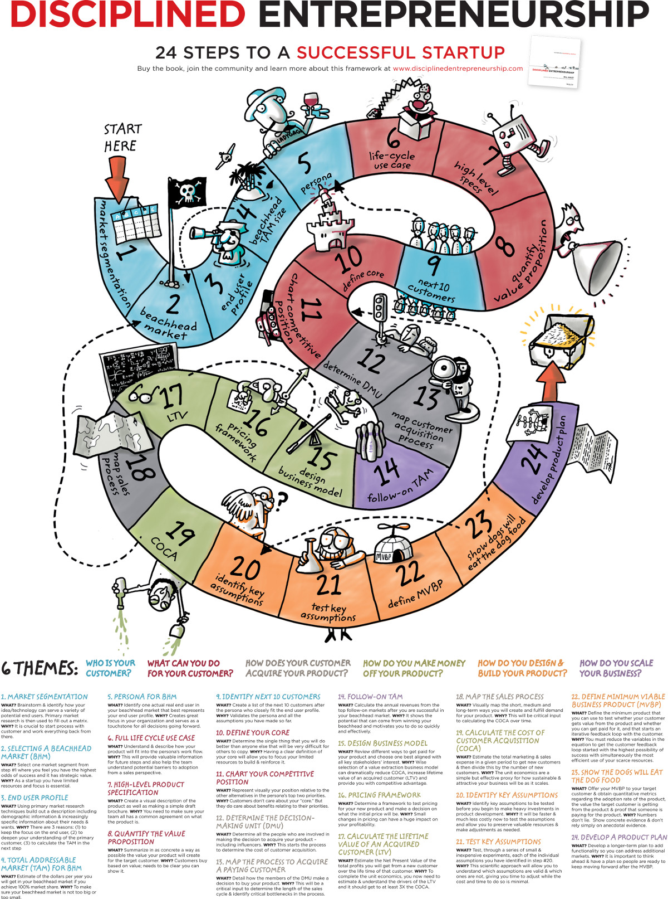

注：【】部分为笔者心得，非原文摘抄。
- 要想成为成功的创业者，你必须拥有伟大的创新性产品。如果没有产品，那影响企业成功的所有其它要素都是纸上谈兵。
- 通常，创业团队规模越大，企业成功的概率就会越高。
- 相对于个人魅力而言，创业者必须具备其它更为重要的能力，如有效的沟通能力、招聘能力和销售能力。
- 创新＝发明创造 × 商业化
- 对于真正的创新而言，对发明创造进行商业化的能力是至关重要的。
- 创业活动应当和创业者的价值观、兴趣和个人技能高度吻合。
- 用户型创业：发现某个创意或技术能够为你的个人生活带来某些方面的改善，进而意识到它们可能有潜力为其他人带来帮助。
- 产品市场组合，指的是可满足特定市场需求，让顾客有兴趣购买的产品。
- 创业要成功，必须学会从不同的角度观察问题。
- 商业成功的唯一充分必要条件是付费顾客。
- 市场才是检验成功的终极标准。
- 作为初创企业，你的资源是非常有限的，因此每一步行动都必须超级高效。
- 目标顾客之的是一群拥有很多共同特征，处于相同的理由愿意购买特定产品的潜在顾客。
- 必须通过原始市场调查发现并了解顾客，依靠“经验之谈”或第三方分析结论都是在盲人摸象，不利于你开发新的市场。
- 应当精打细算，把有限资源应用到你能控制的，经过精挑细选和严格定义的新市场中。
- 在充分了解顾客之前，千万不要对细分市场进行合并。
- 如果市场中有一份调查报告详细说明了你需要的所有信息，那就太迟了，这个商机早就有人开发过了。
- 和潜在顾客直接沟通，了解他们的处境、问题、机会和市场信息，以此方式搜集大量的第一手资料。
- 通过间接渠道获取的市场信息多半都是浮于表面和毫无价值的。
- 在和潜在顾客沟通时，注意自由扩散思维，不要鼠目寸光或急于获得承诺。
- 不能指望顾客为你设计产品，告诉你解决问题的方案。市场调查的目标是了解顾客的问题，然后再设计可以解决这些问题的方案。
- 对于原始市场调查工作，有以下三条重要说明：
- 记住你是在了解事实，不要带着“既成答案”与潜在顾客沟通；
- 潜在顾客只是反馈信息，不能替你做出回答；
- 采用“征询”语气而不是“推销”语气和对方沟通。
- 市场调查的目标不是提供完美的解决方案，而是从不同角度深入了解市场机会，帮助你确定业务重心。
- 选择登陆市场是缩小关注范围和出击目标的重要方式。
- 对于创业者来说，成功意味着你既要有能力选择一个市场，又要敢于果断放弃其它市场。
- 研究表明，人们在面临多个选择时，即使明知其中一项可以获得最大成功，他们也不愿轻易放弃其它选择。
- 细分度越高、越为专注的市场才越容易成功。
- 定义市场的三个条件
- 市场中的顾客都购买类似产品；
- 市场中的顾客具备相似的销售循环，期望产品以相似方式提供价值；
- 顾客在市场中形成口碑效应。
- 潜在市场中顾客互相并不交流，这样的市场很难为初创企业提供动力。
- 必须不断和目标顾客沟通，观察他们，和他们进行互动，这样才能获得反馈。
- 切记不要凭空想象顾客特征。
- 向需求不同的最终用户销售产品就如同向不同市场销售产品一样毫无目标。
- 可以考虑聘请目标市场的最终用户担任团队顾问。
- 不能用有色眼镜去观察最终用户。
- 必须围绕顾客需求而不是你的兴趣或能力创办企业。
- 创业者经常过度乐观，喜欢夸大潜在市场规模，实际上市场越大不一定越好。
- 潜在市场规模关乎的不是顾客数量，而是每年能实现多少收入。
- 市场规模指的是企业达到 100%市场份额时可实现的年收入。
- 未登陆市场刻画用户形象可以让目标顾客变得更加真实，便于创业团队所有成员和企业员工关注同一个清晰方向，即努力保证目标顾客的成功和快乐。
- 不要浪费太多时间构思完美的形象，只要做出合理假设就好，剩下的以后再说。
- 了解顾客如何安排需求的轻重缓急非常重要。
- 很多情况下最终用户往往认为自己说的是事实，但实际上他们的行动恰恰相反。
- 张贴用户形象可以让你的团队服务目标更精确，时刻以用户为核心。
- 用户形象一旦确定，维持一致意见就会变得很容易。
- 必须把关注点放在唯一的用户形象上，如果你从事的是多边市场，每一个市场只能有一个用户形象。
- 明白不该做什么和该做什么具有同样重要的意义。
- 【不要太自信、不要太乐观！】
- 对用户的需求、行为和动机了解得越深刻，成功开发产品和服务用户的概率就越高。
- 全面周期使用案例首先要说明用户形象对现有产品的看法，它们在哪些方面无法满足用户的需求，然后说明通过哪些渠道可以了解到你的产品。
- 顾客都有行为惯性，他们往往满足于当前的流程，不太愿意做出全盘更改，哪怕你的产品比他们的现有系统好得多。
- 如果你首先考虑的是开发产品而不是了解顾客，结果可能导致产品根本无法满足顾客需求。
- 产品功能的说明要具体，详述其每一个组成部分可以为顾客带来哪些好处，要让目标顾客明白为什么需要你的产品。
- 【要打动用户，而不是靠说服。】
- 通常情况下，创业者在描述产品特性时往往会“鼠目寸光”，过于关注主观看法而忽略外部的声音，开发产品宣传册可以避免这个问题。
- 和故事板相比，产品宣传册往往能更好地说明产品的基本特征。
- 以视觉化方式展现产品可以让你的团队和潜在顾客达成共识，了解其具体形态和价值所在。
- 量化价值定位可以帮助你准确了解产品能为顾客带来多少可衡量价值。
- 你要陈述的事物可以衡量且能够用数字来表达时，对它才算有所了解；若无法衡量，你充其量只是一知半解。——开尔文爵士
- 量化价值定位的目标是简明扼要地描述产品的收益是否和顾客期望改善的目标一致。
- 量化价值目标关注的是现在顾客希望得到哪些好处，而不是详细说明产品的技术、特性和功能。
- 根据用户形象的优先需求确定价值定位。
- 在说明使用情况时要尽量做到信息量化。
- 把你的量化价值定位浓缩成一句话，然后用图表的方式体现使用不同产品的区别，这样可以直观形象地向顾客展现你的产品价值。此外，在图表中注意使用顾客的语言来陈述，这会让他们感到你的产品是为他们的行业量身定制的。
- 量化价值定位针对的是用户形象的首要关注问题。
- 创业团队如何处理负面反馈在很大程度上决定着团队能否取得成功。
- 大多数情况下，某一个步骤出现负面反馈并不表示整个创业方案的错误，坚守错误方案而罔顾客观事实地高歌猛进才是真正的失败。
- 核心价值指的是你能以超越竞争对手的效率为顾客带来的收益。
- 低成本带来的好处是可以推动规模经济效益。规模经济效益并不是核心价值，它实际上是一种企业的市场进入策略，在此基础上和对手展开竞争。
- 核心价值必须表述清晰，确保创业团队对核心价值形成一致观点，这样才能保证核心价值的持续有效开发，保证核心价值成为企业制定和实施任何策略的基础。
- 核心价值就是企业有效对抗竞争对手的防御阵地。
- 知识产权作为核心价值的效力在很大程度上取决于企业所在的行业。
- 应用专利的能力往往比专利本身更重要。
- 确定核心价值是区别你和当前以及潜在竞争对手的最有效的方式，它能帮助你在创业过程中利用最少的资源获得最大的价值。
- 先发优势本身并不能转化成可持续的核心价值，有时甚至被视为劣势。
- 和知识产权一样，锁定关键供应商也是预防潜在竞争对手的好策略，在合适的情况下可以积极采用。但它并不是企业的核心价值。
- 容易得出的结论从来都不是真正的核心价值。
- 确定核心价值会为企业带来巨大的优势，能让你在后面的步骤中得到成倍的回报。
- 核心价值即你的竞争对手所不具备的，可以让你实现自我保护，同时能保证持续发展优势的能力。
- 核心价值经常变动是个很不好的兆头，它表明你无法有效形成持续开发的能力。
- 分析竞争地位，目的是了解你的竞争地位能否充分利用企业的核心价值，以及你的产品能否比竞争对手更好地满足用户的优先需求。
- 竞争地位是企业核心价值和顾客优先需求之间的有效连接，它能反映出这个创业要素能否真实地服务你选择的目标市场。
- 通过比较企业产品和顾客当前的行为习惯，你可以更深刻地发现所选定的市场是否真实。
- 与其盯着对手为一座山头拼命厮杀，不如换个思路想想该怎样唤醒顾客实现更大的市场。
- 企业的竞争地位强调的是产品满足顾客需求的能力，而不是对技术优势的说明。
- 根据顾客优先关注的两大需求了解消费者当前的行为模式。
- 要成功地销售产品，你必须了解参与采购决策过程的每一个人。
- 在了解顾客的决策单元信息时，注意不要采用销售的语气，而要使用征询的语气展开对话。
- 获取新顾客的成本总是比你想象的要高。
- 如果某些因素会影响你的业务销售，必须马上解决问题，不能等到企业全部投入资金和人力物力之后再去解决。
- 向潜在投资方证明你了解顾客的采购流程，这样能有效地为企业吸引投资机会。
- 从目标顾客群体中寻找经验丰富的人做企业顾问，向其了解具体的相关信息是非常有帮助的。
- 不要忽略那些可能影响企业销售能力的政府或类似机构的管理活动。
- 定价低于对方的预算权限会带来很多好处，能避免决策单元中某些参与者的出现，增加成功销售的机会。
- 优秀或经验丰富的创业者或许可以在某种程度上管理好较长的销售周期，但对于经营新业务、开发新产品的新企业而言，贸然做出这样的尝试无异于自取灭亡。
- 对市场的深入了解永远是创业者的最佳起点。
- 后续市场通常有两种，一种是向相同顾客销售附加产品或应用的市场，即通常所说的追加销售市场；另一种市场，即创新型企业经常采用的方式，是向毗邻市场销售相同的基本产品。
- 了解后续市场规模的目的是鼓励团队做好登陆市场的攻坚战，要强调的重心依然是开发和培育企业的核心价值。
- 要想成功征服后续市场，首先要成功占领登陆市场。
- 如果你的目标是吸引风险投资或创建大型企业，通常后续市场加上登陆市场的总规模应当在 10 亿美元以上。
- 估算后续市场规模是一项快速验证工作，它能证明你的产品未来会有更大的销售市场，而且能有效激励团队成员和投资者，让他们意识到你的企业同时具备短期和长期发展潜力。
- 相对于行业中经营模式已经固定的其它企业，商业模式是初创企业可以利用的一大优势。
- 应当从顾客的角度评估商业模式，对不同的选择进行测试，最终确定能为企业有效获取价值的商业模式。
- 企业从顾客那里得到的回报取决于你的产品能为顾客创造多少价值，而不是根据产品成本随意指定的价格涨幅。
- 在分析商业模式时思考如下几个方面：
- 顾客：了解顾客希望做什么；
- 价值创造和获取：评估你的产品能为顾客创造多少价值以及何时能为他们创造价值，然后确定哪种价值获取方式适合你的企业；
- 竞争对手：分析你的竞争对手在做什么；
- 分销：确保你的分销渠道有足够的动力为你销售产品。
- 免费可以吸引很多人试用产品，是一种有效的降低顾客获取成本的策略。但它的作用也仅此而已，因为这样并不能保证你吸引来的“顾客”会为产品付费，哪怕是一分钱也好。当这些“顾客”免费试用产品时，你一样要产生生产成本，只有实现收入才能维持企业继续经营，因此还是要依靠付费顾客。
- 授权使用费通常等于或低于单位产品销售价格的 1/12。
- 千万不要把顾客当成傻子，利用他们的单纯为企业赚钱。
- 对一个企业来说，为顾客创造价值和寻找合适的商业模式同等重要，应当实现两者的平衡。
- 评估盈利能力有两个重要指标，分别是顾客终身价值和顾客获取成本。
- 商业模式的选择对企业赢利能力的影响远远大于定价的影响。
- 顾客终身价值和获取成本是决定企业是否盈利的两个重要指标。
- 定价策略的目的即在实现更多收入和吸引更多顾客这两者之间努力建立平衡。
- 应当基于产品为顾客创造的价值，而不是基于产品成本定价。成本定价法会让企业严重陷入被动。
- 我们的业务很简单，顾客付给我两美元，我们为他们创造十美元。这就是我们成功的原因。——史蒂夫·瓦斯科
- 不要向无关人员透露产品的成本，特别是销售团队。
- 针对顾客类型采用差异化定价策略可保证企业获得更高的利润。
- 如果要选择对软件或硬件产品做出打折，建议对硬件产品打折，对软件产品维持始终如一的价格。这是因为，顾客很容易查询到硬件产品的成本，但软件产品的成本就很不透明了。同样，如果硬件产品升级你可以很轻松地加价，但软件产品价格一旦确定就很难再更改了。
- 如果一开始价格定得很低，你会发现很难说服顾客再接受提高的价格。
- 顾客终身价值对于自律型创业者的重要之处在于，它能避免盲目乐观，帮助你根据真实数据做出判断。
- 顾客终身价值真正关注的是利润而不是收入。
- 把低利润核心产品和高利润附加产品合二为一可以有效提高顾客终身价值。
- 顾客终身价值的高低取决于企业对商业模式和定价方案的选择。
- 计算顾客终身价值是要了解新顾客平均可为企业创造多少利润，计算时须扣除资本成本。
- 一般来说，终身价值和获取成本保持在 3:1 或更高的比例对企业来说比较理想。
- 针对短期销售流程，企业要关注的是为产品创造需求和订单。
- 销售流程包括产品宣传、顾客培育以及销售实现。
- 顾客获取成本是关乎企业成败的重要因素。
- 顾客获取成本不包括固定生产成本和销售营销部门之外的费用，如研发、财务管理和经营开支。它只包括销售营销成本，哪怕潜在顾客最终没有购买你的产品。
- 失败的（销售营销）成本同样要计入顾客获取成本。
- 谨慎使用直接销售手段，虽然有效但这种方式成本很高。
- 选择商业模式时注意思考顾客获取成本。
- 降低顾客获取成本最有效的方式是建立企业和产品的正面口碑。
- 针对相同决策单元的重复销售和顾客获取流程能有效提高销售表现。
- 千万不要盲目乐观，你要了解的是真实的数据而不是梦想的结果。
- 确定最小可行商业产品的过程不但是测试假设的渠道，而且能系统化测试顾客会不会付费购买你的产品。
- 确定重要假设条件是验证原始市场调查过程的第一步，第二步是寻找顾客并观察他们的具体行为是否符合假设条件。
- 市场调查和实验验证结果的结合，可以让企业更好地开发产品和实现销售。
- 开发最小可行商业产品必须具备三个核心要素：
- 顾客通过使用产品获得价值；
- 顾客为产品支付费用；
- 产品可以推动顾客反馈循环，利用顾客反馈进行迭代，不断开发出更好的产品。
- 最小可行商业产品应当兼具简单性和基本功能性。
- 如果你能减少初始产品的变量，在无须开发全部功能的情况下向顾客快速交付基本可用的产品，企业成功的概率就会显著提高。
- 最小可行商业产品的作用是对产品进行系统化测试，了解产品能否真正为顾客提供价值。
- 必须衡量顾客对产品的正面评价，因为这样可以形成有效口碑，降低企业的顾客获取成本。
- 净推荐值（Net Promoter Score）是衡量业务长期盈利能力的重要数据，它能表明企业产品口碑的力度以及吸引回头客的可能性。
- 在开发最小可行商业产品时，你要确定和组合的是产品最基本的特征。在开发产品方案时，你必须根据用户形象的需求对产品特征进行选择，然后重新组合成产品。
- 如果企业只强调快速开发新的产品特征而忽略了对质量的持续关注，最终一定会出现各种质量问题。
- 方案的结果无足轻重，真正重要的是规划过程。——德怀特·戴维·艾森豪威尔
- 产品方案的意义在于为你提供系统化的开发指导，没有它你的创业之路无异于盲人摸象。
- 决定成功的不是真理，是行动！